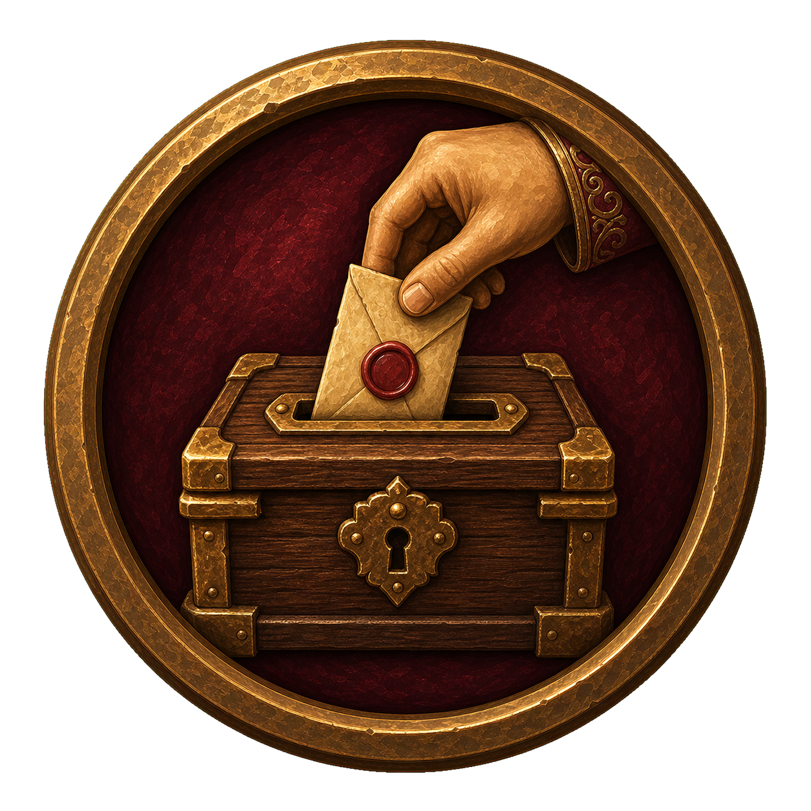
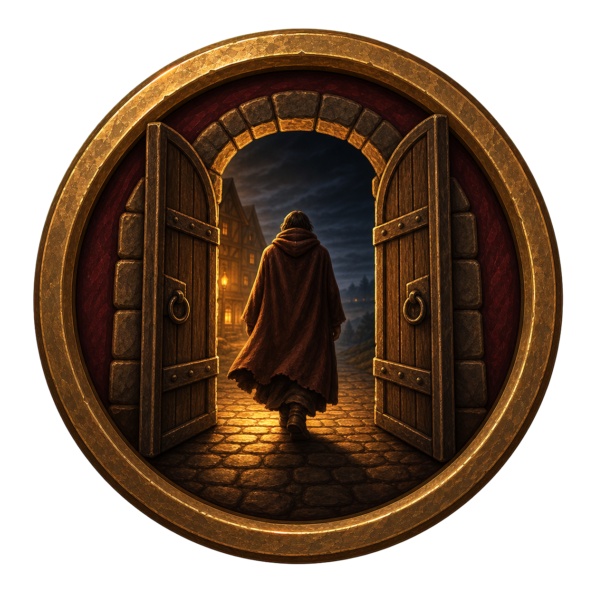

Votación
Una mano deposita el voto sellado en la urna del pueblo. La acción cuenta por sí sola qué está ocurriendo.
Ilustraciones pictóricas 3D, pensadas para entenderse como pequeñas escenas y no como símbolos genéricos.

Una mano deposita el voto sellado en la urna del pueblo. La acción cuenta por sí sola qué está ocurriendo.

La persona expulsada deja atrás la luz del pueblo y cruza sus puertas. Es dramática sin ser violenta.